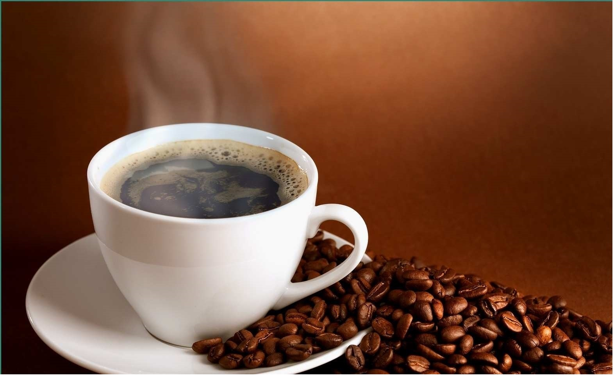

Kopi Sore

PUSUK BUHIT, GUNUNG LELUHUR BATAK ("Pusat Bukit") adalah nama salah satu puncak di pinggir barat Danau Toba.Pusuk Buhit, adalah gunung yang awalnya bernama Gunung Toba memiliki ketinggian 1.500 meter lebih dari permukaan laut dan 1.077 meter dari permukaan Danau Toba. Ada tiga kecamatan yang berada langsung di bawah gunung tersebut yakni Kecamatan Sianjur Mula-mula, Kecamatan Pangururan, dan kecamatan Harian Boho.
Dalam mitologi suku Batak, puncak tersebut diceritakan sebagai tempat "kelahiran" suku tersebut. Pusuk buhit adalah salah satu gunung berapi (G.Sibayak, Sinabung, Sorik Merapi) yang terdapat di Sumatera Utara. Gunung ini memiliki ketinggian 1972 mdpl (meter di atas permukaan laut) dan mencakup beberapa desa di Kecamatan Sianjur Mula-mula dan Kecamatan Pangururan. Kabupaten Samosir
Konon Siboru Deak Parujar turun dari langit. Dia terpaksa meninggalkan kahyangan karena tidak suka dijodohkan dengan Siraja Odap-odap. Padahal mereka berdua sama-sama keturunan dewa. Dengan alat tenun dan benangnya, Siboru Deak Parujar yakin menemukan suatu tempat persembunyian di benua bawah. Alhasil, dia tetap terpaksa minta bantuan melalui burung-suruhan Sileang-leang Mandi agar Dewata Mulajadi Nabolon berkenan mengirimkan sekepul tanah untuk ditekuk dan dijadikan tempatnya berpijak. Namun sampai beberapa kali kepul tanah itu ditekuk-tekuk, tempat pijakan itu selalu diganggu oleh Naga Padoha Niaji. Raksasa ini sama jelek dan tertariknya dengan Siraja Odap-odap melihat kecantikan Siboru Deak Parujar. Akhirnya Siboru Deak Parujar mengambil siasat dengan makan sirih. Warna sirih Siboru Deak Parujar kemudian semakin menawan Naga Padoha Niaji. Dia mau tangannya diikat asal yang membuat merah bibir itu dapat dibagi kepadanya. Namun setelah kedua tangan berkenan diikat dengan tali pandan, Siboru Deak Parujar tidak memberikan sirih itu sama sekali dan membiarkan Naga Padoha Niaji meronta-ronta sampai lelah.